Interaction and Graphics Techniques
We decided to use the VIVE headset because of the trackers given and the sensors we could use in the room. This allowed for tracking of the trackers without having them in the player's view. This allowed for tracking of the wings and flapping with the user looking forward, for instance.
The physical part of the project was partly inspired by the Birdly project (see Related Work below), but also from our own imagination. In the last project, we had not experimented too much with the interaction aspect of the project, therefore, we wanted to go wild. The players using Dragon Trainer use their whole bodies to interact with the gameplay, tilting, flapping, steering, and opening/closing their mouths makes it fun and sometimes a little bit challenging. The tilting board is not only to make the experience challenging, but we also hypothesized that actually tilting while tilting in VR could help with the cybersickness that is easily caused when your senses do not match what is happening in virtual reality.
The game world is infinite as every part is procedurally generated. This means new areas are created whenever the player moves, and you will never reach the edge as everything is math. We decided to use procedural terrain generation because a central part of the experience is freedom, and reaching the end of the world breaks that feeling. Since hand-crafting an infinite world is of course not possible, procedural generation was the clear choice. The terrain itself is generated through sampling Perlin Noise, and everything else is added randomly afterwards based on the features of the ground. To hide the trick of creating terrain as the player moves, we also added distance fog, which blends the world with the color of the sky based on how far away something is.
The fire effect was created with the VFX graph in Unity. At first, it was developed based on a couple of papers, with compute shaders and a lot of code, but that quickly got too complicated for the effect we were after and the skillset we had. We therefore created it using Unity's VFX and shader graph tools. This turned out to create a nice effect and did not take too much time to create which gave us time to work on more things. Shader graphs were also used when creating the dissolve effect that gets triggered when sheep are hit by the fire.
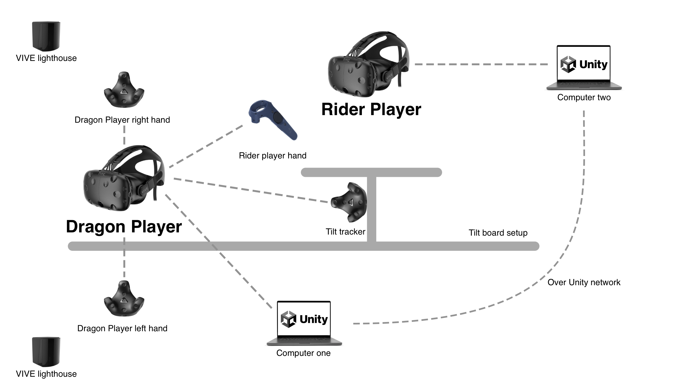
Fig. Setup Diagram
Related Work
Hover Broom is a AGI project from 2016 that was one of our first inspiration points. We wanted to create a similar experience but with having peoples feet dangle to immerse them even more in the experience. In the end, we steered away from this idea but it was still a good inspiration point in the beginning.
We looked into cyber sickness and also discussed with our teachers in the course to find a solution for the cyber sickness that could be caused. We looked into papers the e.g. used occlusion of the peripheral when doing large movements in VR in order to reduce cybersickness. Even though we did not implement this solution, papers like this helped us think of good solutions while developing the project.
When we were ideating for the project we had many ideas, "What if we hang someone from the ceiling? What if we have their feet dangling on high bar chairs? Can we make a platform tilt by laying a board on an inflatable mattress?". The last question is almost the final product and we got some of the inspiration from the Birdly project that immerses their players in a flying VR experience on a moving platform.
Challenges, Obstacles & Lessons Learned
One big lesson that we learned during this project was that there is a lot of tweaking and testing that goes into making the VR experience fun but also not cybersickness-inducing. We put a lot of time into testing and tweaking the controls, making them realistic, not too fast but also smooth and fun. We learned that cyber sickness is often going to be a problem but the experience impacts it heavily. There is also big differences depending on the users experience with virtual reality in how sick they become.
Another lesson we learned during the project was that there is a lot of work syncing and managing network objects. We had problems with high fps, weird connection problems and a lot of fun bugs. When we had new functionality, such as boids behaviour on sheep it was not done since we had to sync it through three instances of the project (dragon, rider and spectator).
Another challenge we had was to work in Unity together as a team. Even though we are used to using Git, there were some problems working in the same scene in Unity. It worked out in the end, however there was some manual labour that had to be done when we merged branches. If we were to do it again, we would probably instanciate every gameobject with scripts instead of adding them directly to the scene. We would also use the LFS (Large File Storage) to handle the larger assets.

 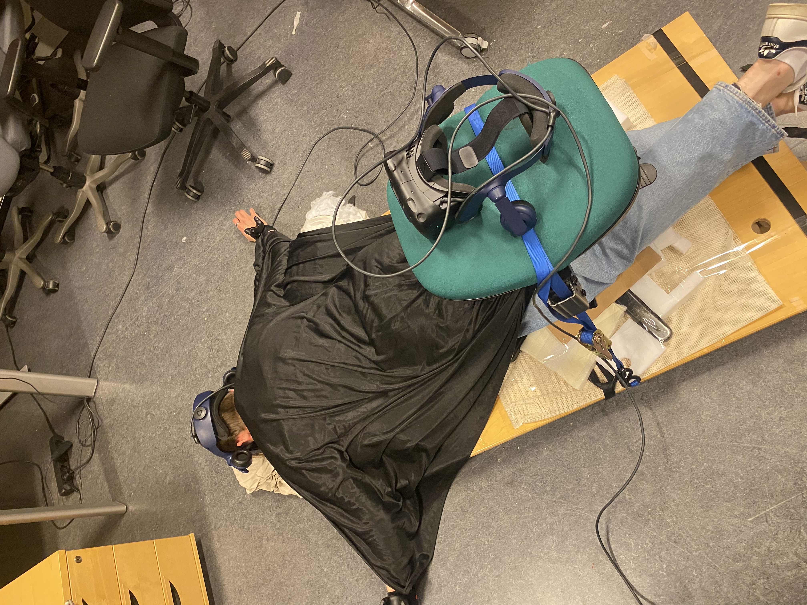
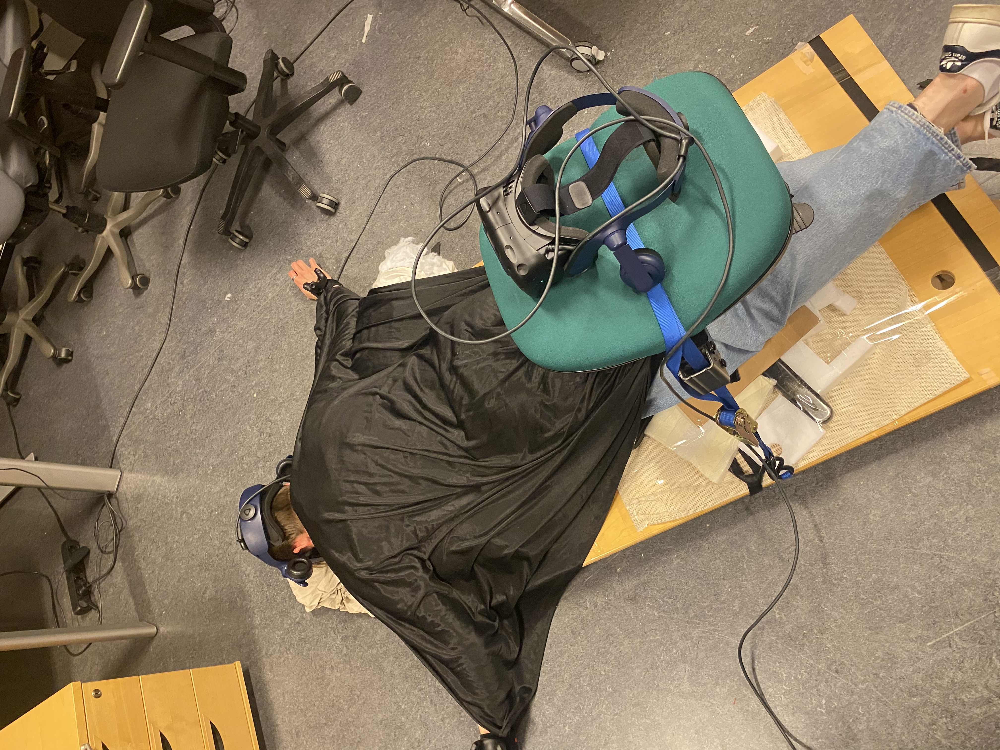
 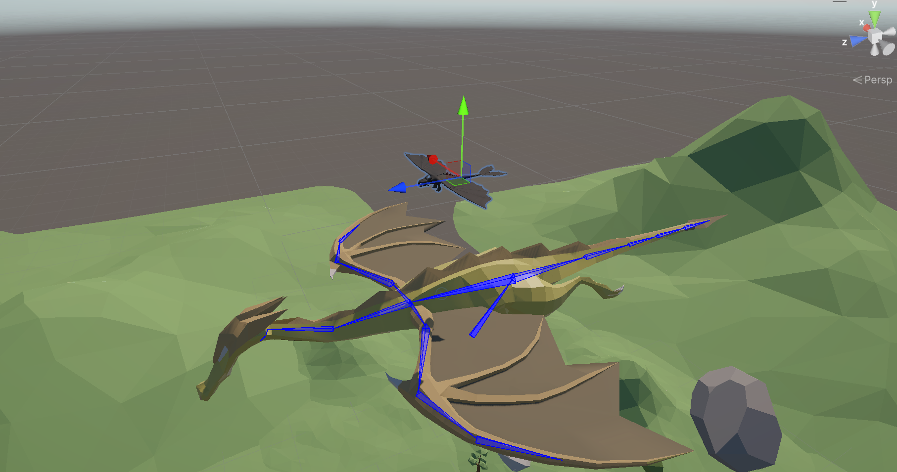
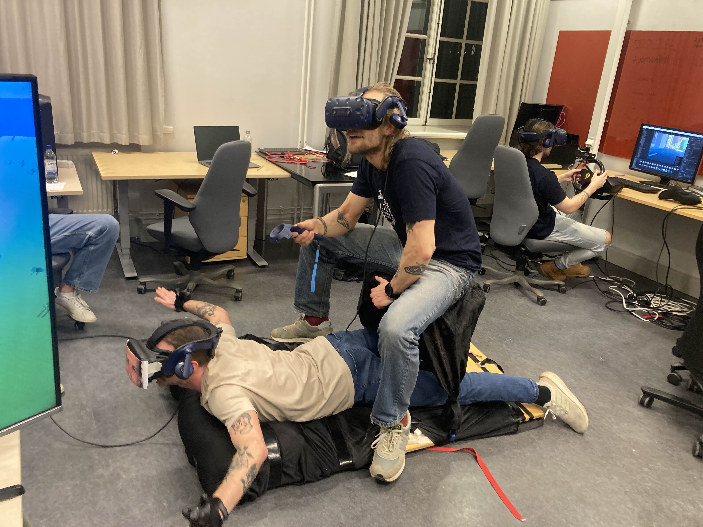
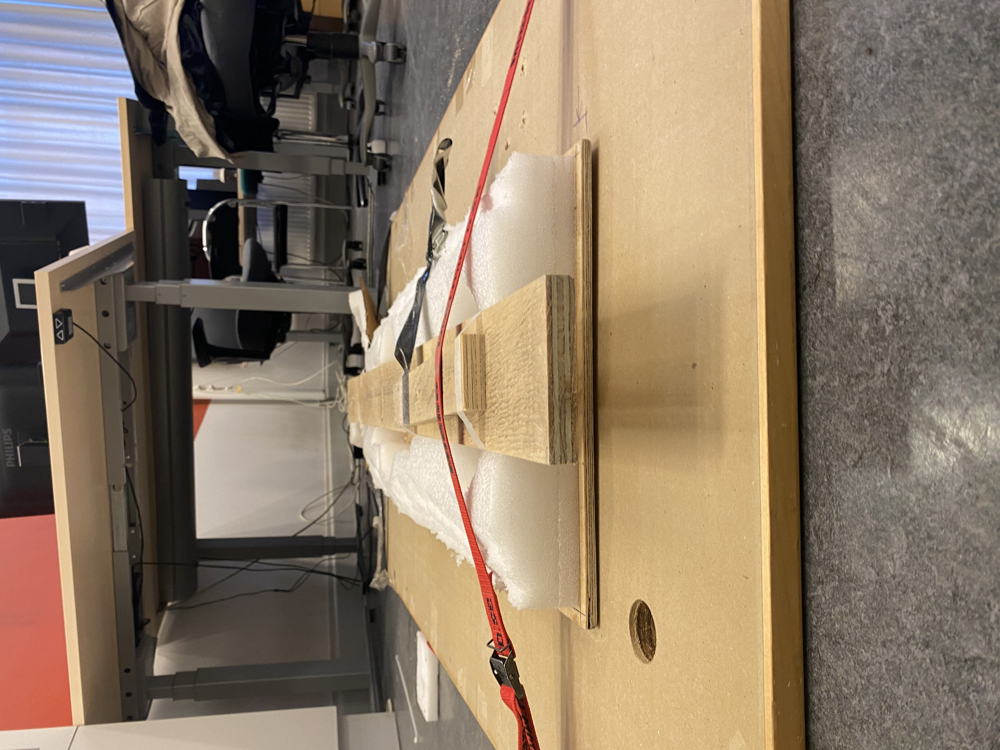
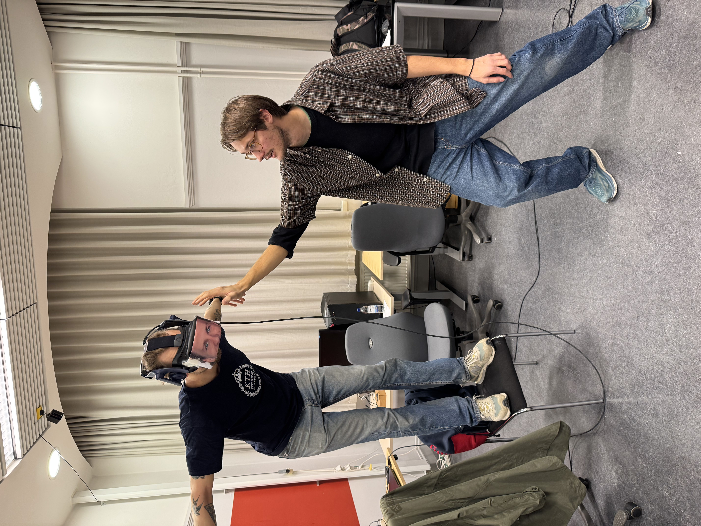
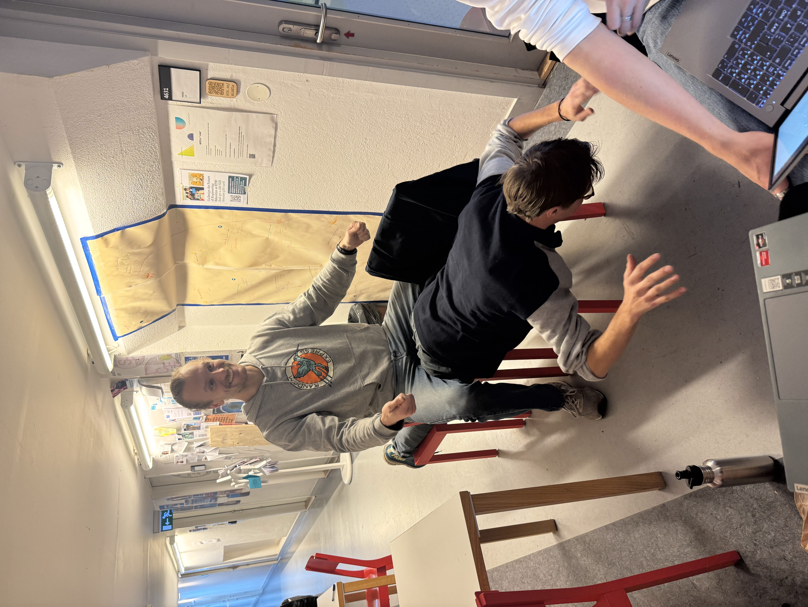
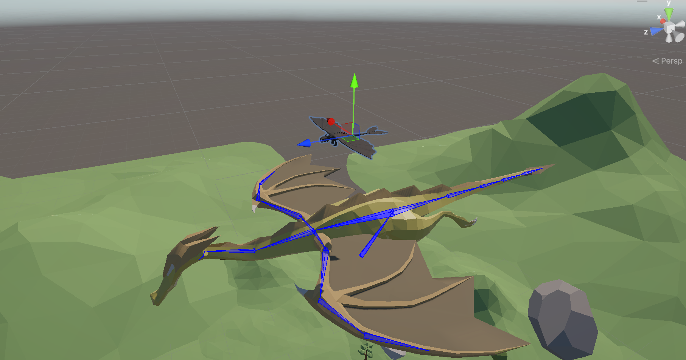
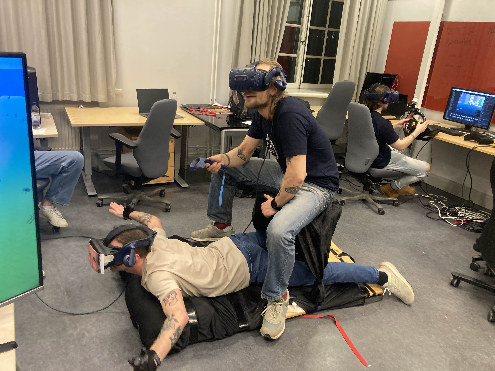
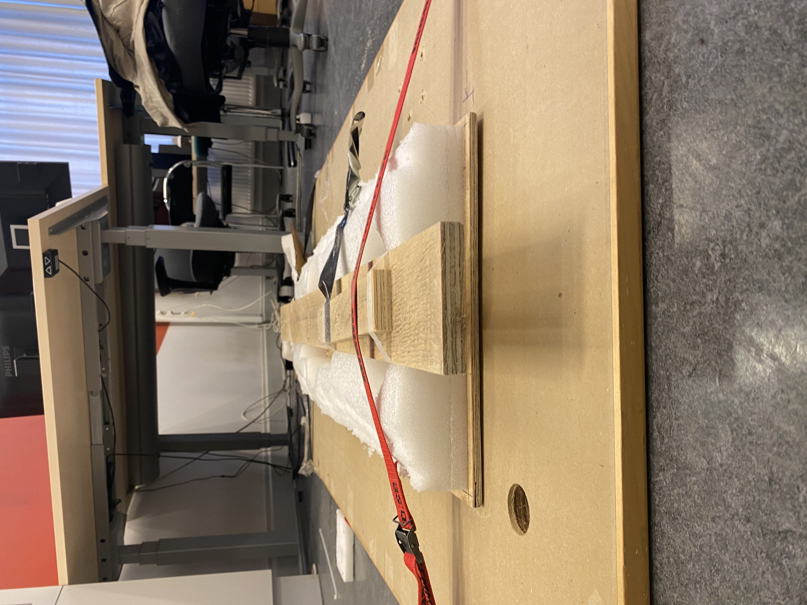
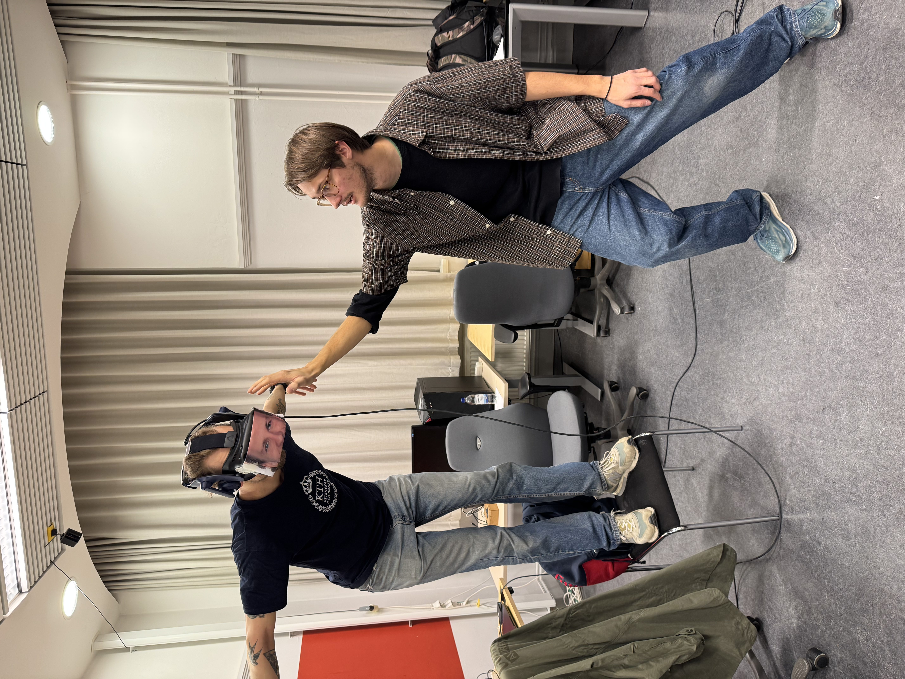
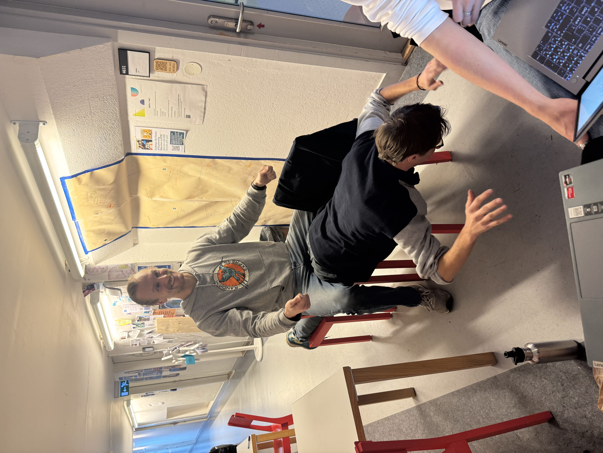
 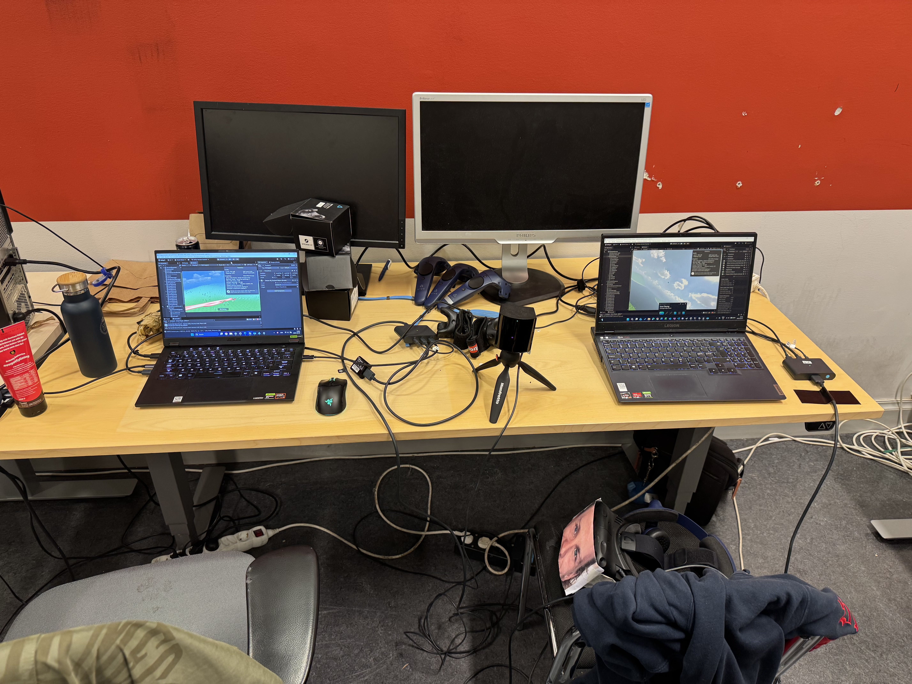
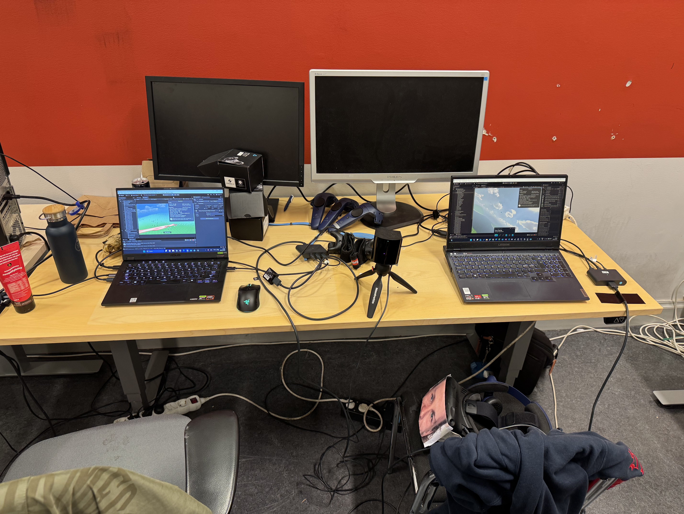